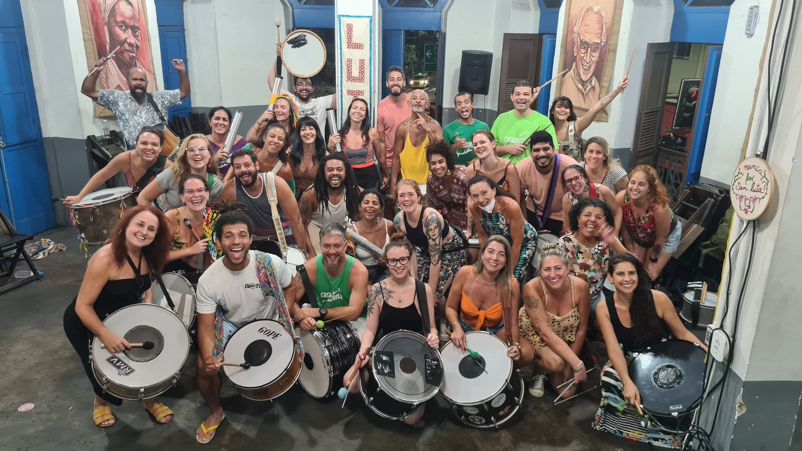
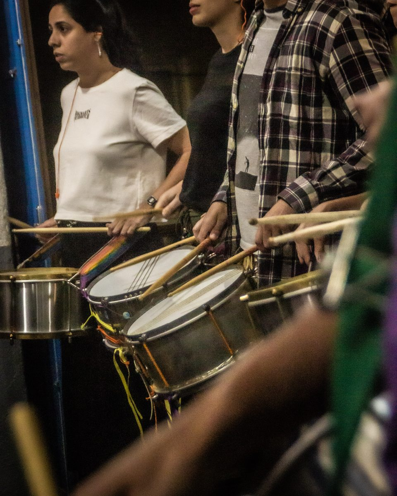
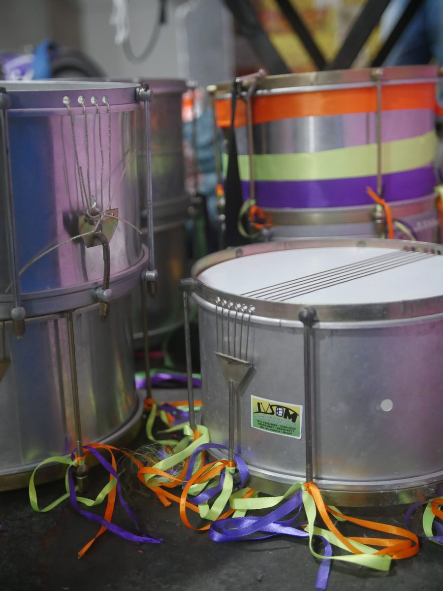

Turma exclusiva do zero às 19h
9 em cada 10 novos alunos chegam sem nunca ter tocado em bloco. Você começa aprendendo o pulso no corpo e as levadas básicas passo a passo, sem julgamentos.

Aprenda zabumba, triângulo, caixa, ganzá ou pandeiro passo a passo toda segunda-feira na Fundição Progresso (Lapa) — a tempo de desfilar na Bateria Infinita do Bloco do Caramuela.
Sem taxa de matrícula · Participação nos shows e desfile 100% opcional
A rotina da semana pesa, a segunda-feira parece sempre igual e muita gente sonha em tocar num bloco mas trava por achar que precisa de experiência ou instrumento caro. Nos últimos 8 anos, mais de 150 integrantes provaram o contrário na nossa bateria.
9 em cada 10 novos alunos chegam sem nunca ter tocado em bloco. Você começa aprendendo o pulso no corpo e as levadas básicas passo a passo, sem julgamentos.
79% dos iniciantes começam sem instrumento. O bloco empresta zabumba, triângulo, caixa, ganzá e pandeiro nas aulas para você testar antes de investir no seu.
Mesmo quem sente insegurança no início consegue tocar com o apoio dos professores e da regência. E se preferir apenas curtir as aulas de segunda, a apresentação é 100% opcional.
Depoimentos reais extraídos das fichas anônimas de avaliação de módulo de quem chegou do zero e hoje faz parte da Bateria Infinita.
“Minhas segundas-feiras foram mais felizes, eu aprendi algo que nunca achei que fosse capaz de aprender.”
“Sinto que todos os passos que dei como forrozeira me levaram até aquele momento. Foi emocionante demais, um momento da vida que nunca vou esquecer.”
“Fiquei inseguro/a no começo, mas com o apoio dos monitores e da regência consegui participar das apresentações sem maiores problemas.”
“A leveza e a diversão no meio de um processo de aprendizado do zero. Além da música, a energia das pessoas encorajando umas às outras é contagiante.”
Profissionais de 30 a 55+ anos da Zona Sul, Zona Norte, Centro e Niterói que queriam desconectar do trabalho e achavam que não tinham coordenação para música.
Quem já dança ou ama forró pé-de-serra e sonha em tocar Luiz Gonzaga, Alceu Valença e Falamansa no cortejo de rua.
Quem procura amizades reais fora das telas, em um espaço respeitoso, festivo e acolhedor toda segunda à noite na Lapa.
Nascido da banda Caramuela — formada em 2010 com raízes na agroecologia e na cultura popular brasileira — o Bloco do Caramuela leva desde 2018 a força do forró tradicional para as ruas, cortejos e grandes palcos do Rio de Janeiro.
Toda segunda-feira à noite, a Bateria Infinita se reúne na Lapa para aprender e tocar um repertório vivo com mais de 30 clássicos de Luiz Gonzaga, Marinês, Alceu Valença, Falamansa, Rastapé e Dona Zefa, além de composições autorais.
“Todos os arranjos das músicas do bloco nascem da sonoridade clássica do trio de forró — sanfona, zabumba e triângulo — expandida para uma bateria vibrante e acolhedora.”
Madrinhas do Bloco: Anastácia (Rainha do Forró) e Janayna Pereira



Escolha um instrumento abaixo para conhecer seu papel no bloco, ver quem ensina o naipe e interagir com o sequenciador de Baião e Xote.

É quem sustenta o pulso e faz todo mundo dançar. Você aprende a equilibrar a mão da maça (grave profundo) e a mão do bacalhau (contracanto seco e estalado) nas levadas de baião, xote, arrasta-pé e maracatu.
Nossa didática foi pensada para quem nunca tocou nada ganhar confiança rápido e evoluir tocando junto desde os primeiros encontros.
Clique em “Quero Participar”, informe seu nível e o instrumento que quer testar e já receba as orientações da produção para chegar na turma das 19h (Iniciantes) ou 20h30 (Iniciados).
Sem precisar comprar nada antes: teste zabumba, triângulo, caixa, ganzá ou pandeiro com empréstimo gratuito e receba vídeos e áudios de apoio + grupo de WhatsApp com os professores.
Treine toda segunda na Fundição Progresso, participe das confraternizações e — se quiser viver a emoção do palco — junte-se ao bloco no Carnaval Carioca 2027 (desfile previsto em fevereiro).
| O que faz diferença para quem começa | Oficina do Caramuela | Aulas / Blocos Tradicionais |
|---|---|---|
| Aceita iniciantes do zero absoluto | Sim (90% dos novos alunos) | Muitas vezes exige base prévia |
| Empréstimo gratuito de instrumento nas aulas | Sim, incluso para iniciantes | Exige comprar instrumento antes |
| Professor especialista dedicado por instrumento | Sim (5 especialistas + maestro) | 1 instrutor para dezenas de alunos |
| Repertório único de Forró Pé-de-Serra + Carnaval | Sim (+30 clássicos e autorais) | Apenas samba-enredo ou teoria isolada |
| Participação nos shows e desfile 100% opcional | Sim, sem pressão | Cobrança para desfilar ou comprar fantasia |
Músico, educador e fundador do Caramuela, Igor Conde conduz a Bateria Infinita toda segunda-feira com energia contagiante, arranjos pensados para incluir quem nunca tocou e uma escuta coletiva que transforma dezenas de percussionistas em um só corpo sonoro.
Cada instrumento conta com orientação específica de professores experientes da cena do forró e do carnaval carioca, garantindo atenção próxima na técnica de cada naipe.
Tudo transparente para você se planejar e chegar junto já na próxima segunda-feira.
Desconto Combo Duas Oficinas: 30% de desconto na segunda oficina ao combinar Percussão com Dança Popular, Cordas ou Sopros.
*Valor equivalente mensal no pacote completo fechado no início do módulo. Pagamentos no cartão podem incluir taxas da operadora. Empréstimo de instrumentos nas aulas já incluso para iniciantes.
Preencha os dados ao lado para abrir seu atendimento direto no WhatsApp com todas as suas escolhas, ou acesse diretamente nossa Ficha de Matrícula e o Grupo de Aula Aberta.
Não precisa saber tocar, não precisa ter instrumento e a participação nos shows e no desfile é 100% opcional.